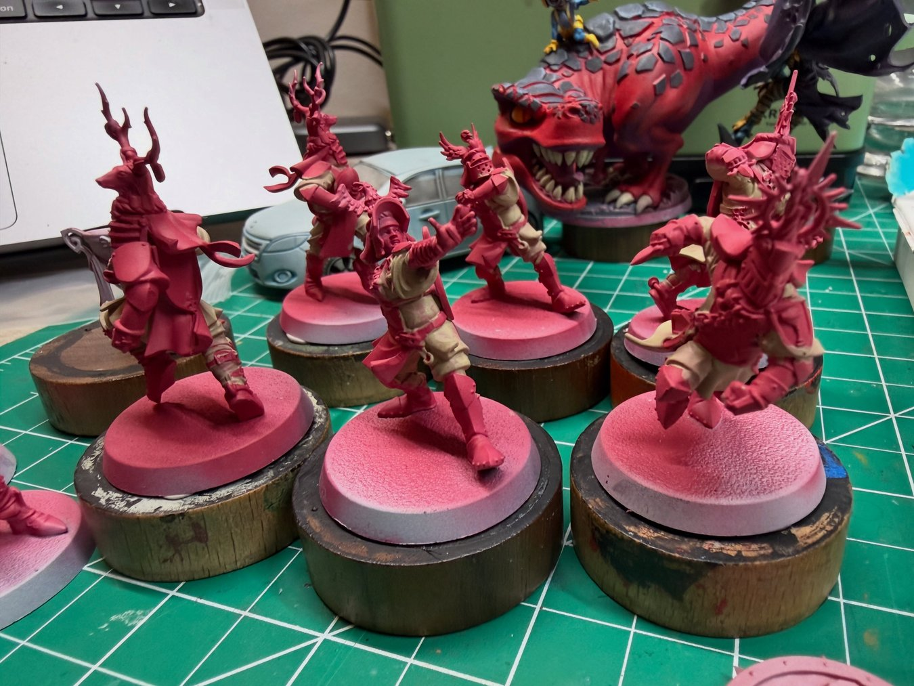

No match photos from this one. Here's the squad instead.
Four Tomb Guardians, zero Guardians removed, and a Thrower who strolled in twice. Alison steals the MVP off a losing side.
On air Cabalvision match report
With Jim Johnson and Bob Bifford
JIMGood evening, Blood Bowl fans, and welcome to a blazing-hot Regulatory Stadium! The Bretonnian Holy Hand Grenadiers came in hunting for the win that ends a two-game skid, and instead ran face-first into a wall of bandages and bad intentions.
BOBThat wall's got a name, Jim: Khakters The Exalted. Turn ONE, ball's still in the air, and this Tomb Guardian's already folding squire Elma Kuchler in half. Stretchered before she'd broken a sweat. Ugly start.
JIMFour ST5 Tomb Guardians, Bob. Regeneration, armour value ten, near-unkillable. To their credit, the Grenadiers didn't get baited into trading blocks with them. Trouble is, they couldn't spring a receiver loose to make that speed pay.
BOBAnd the Undead don't tire, Jim. Turn six, Khakters catches Miltrud Wachter on the move. Carried off with a busted throwing arm she is NOT going to forget. That girl left the pitch hating the Undead, personally.
JIMMeanwhile the ball? The Tomb Kings' Thrower Takatenus just... strolls. Turn eight he waltzes in untouched. One–nil. The one bright Bretonnian moment: Rogerin D'Armignac threads a tidy completion, but there's no drive behind it.
BOBSecond half's more of the same. Kunigunde Steinberger badly hurt on turn thirteen, and Takatenus caps it in the final turn for two–nil. The Grenadiers didn't remove a single Guardian all game. Regeneration'll do that to you.
JIMConsolation prize goes to Knight Catcher Alison De Belloy, who ran, tackled, and covered enough ground to steal the MVP award off a losing side. Small light in a dark afternoon for the Grenadiers.
BOBFinal: Tomb Kings two, Grenadiers nil. Bodies everywhere, all of them Bretonnian. Back to the drawing board.
Scoring & SPP
| Player | Events | SPP |
|---|---|---|
| #3 Alison De Belloy (Catcher) | MVP | +4 |
| #6 Rogerin D'Armignac (Thrower) | Completion | +1 |
Timeline
| Turn | Event | HG–Opp |
|---|---|---|
| T1 | Khakters (Tomb Guardian) casualty: Elma Kuchler Badly Hurt | 0–0 |
| T6 | Khakters casualty: Miltrud Wachter Lasting Injury (−1 PA) | 0–0 |
| T8 | Takatenus (Thrower) touchdown | 0–1 |
| T8 | Rogerin D'Armignac completion | 0–1 |
| T12 | Takatenus casualty | 0–1 |
| T13 | Khakters casualty: Kunigunde Steinberger Badly Hurt | 0–1 |
| T16 | Takatenus touchdown | 0–2 |
The infirmary
- Miltrud Wachter (#10): permanent −1 PA, and a brand new Hatred (Undead)
- Elma Kuchler and Kunigunde Steinberger: Badly Hurt, both back for the next match
Casualties: For 0 · Against 4
Credit where it's due
- Khakters The Exalted (Tomb Guardian): three casualties
- Takatenus (Thrower): both touchdowns